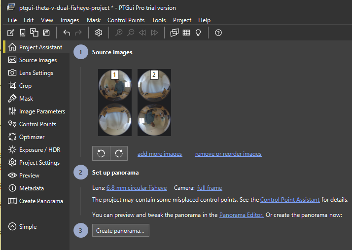

Dual-Fisheye Still Image
By using plug-in technology, you can improve the user experience for your customers. One example is to reduce the time between still image shots. The RICOH THETA S requires approximately 8 seconds between shots. The RICOH THETA V reduced this time to 4 seconds. The dual-fisheye plug-in reduces the time between shots to less than a second.
The reduction in time is achieved by delaying the process of converting dual-fisheye images into a single equirectangular image inside the camera.
This is useful for the following applications:
- HDR
- Timelapse
- High volume pictures such as taking 1,000 images at a large construction site
- Factory or workflow optimization (Taking pictures of an assembly line or other process involving people moving items)
Concepts Covered
- Image stitching control
- Permission setting to access storage and camera
- Post-production workflow
- Conversion of dual-fisheye to equirectangular
Quick Start with pre-compiled apk
Download apk and source
Download the zipped file ichi-hirota-dual-fish.zip
Updated apk on August 6, 2018. Download apk, no source.
Extract contents
Use zip, 7zip or the archive application of your choice.
Locate dualfisheye_plugin.apk
Go into the folder apk and locate dualfisheye_plugin.apk.
use adb to install apk
Connect your THETA V to your workstation with a USB cable. Your THETA V must be unlocked and in Developer Mode. If you need assistance on joining the partner program to enable your THETA V with Developer Mode, please contact jcasman@oppkey.com
install -r dualfisheye_plugin.apk

use Vysor to set apk permissions
Start Vysor

Select Apps in Settings

Scroll down until you see apps.

Select Plugin Application

In App Info select Permissions

Enable storage and camera
Reboot Camera and Put Into Plug-in Mode
- Unplug camera
- Hold power button for 8 seconds
- Turn camera back on
- Hold mode button for 2 seconds or longer
- Confirm that that the LED above the shutter button is white
- WiFi LED below shutter will be aqua color and flashing
Taking Pictures
The camera has two modes by default. It can either take a single dual-fisheye image or take three dual-fisheye pictures in rapid succession for bracketing. You can switch between single image and bracketing mode by pressing the Wi-Fi button on the side of the camera.
Single Image
In single image mode. the Wi-Fi LED will be aqua and flashing.
3 Shot Mode
In 3 shot mode, the Wi-Fi LED will be magenta and flashing faster compared to when the camera is in still image mode..

The gif below was contributed by community member @juantonto.

For 3 shot mode, you need to stabilize the camera for the duration of the three shots. Place the camera on tripod or stand it up on a table.
Press the shutter button.
Refer to the video above for the expected behavior of the camera, including LED and audio feedback.
Confirm Pictures were Taken
Connect camera to your computer with a USB cable.
In a file browser such as File Explorer, click into RICOH THETA V in
the same process you use for a normal camera or storage device.
Go into DCIM/100RICOH. You will see the dual-fisheye images with
filenames that contain a date and time stamp.

Stitching Dual-fisheye Images Into Equirectangular
For most applications, you will need to stitch the images in post-production processing using your own stitching library.
Ichi Hirota Stitching Application
You can also commercially license Ichi's stitching library and Android application. For more information on licensing Ichi's stitching library and Android application, please contact Jesse Casman at jcasman@oppkey.com.
Ichi's stitching library requires a one-time callibration for each camera. A trial version of the callibration app is available here. This app will time-out at the end of July, 2018.
Original Dual-fisheye Image

Callibration Application
Dual-fisheye image loaded into callibration app.

The lens distortion is compensated for by selecting points on the edges of the spheres. This is a one time process. The lens distortion information is then stored in the mobile app.


When you select the points of overlap, the callibration app will present a zoom view so that you can precisely select the overlap. In the view below, we're using the tree branch as the callibration point.

HDR is handled by the application.
Stitching Results

Close-Up on Stitch Line
Viewed using the Ricoh Desktop Appplication


PTGui
Community member Svendus has reported success stitching hundreds of spheres on PC and Mac using PTGui 11.2. A free trial version is available.
This project file bundle has both a preset for THETA images as well as an example image.

Original Image

Stitched Image

Close-up Image
Using the THETA Desktop Application to view the stitched image.

Other Stitching Solutions
Community member squizard360 is experimenting with Hugin and the dualfisheye2equirectangular_ffmpeg_remap project from evertvorster.
Control of Stitching
Still images can be saved as dual-fisheye by adjusting the stitching parameter.
mParameters.set("RIC_PROC_STITCHING_TYPE", "RicNonStitching");
The size of the dual-fish image is 5792x2896. Use the command below:
mParameters.setPictureSize(5792, 2896);
The picture below is from Ichi Hirota.

This article provides more information on a plug-in built by community developer Ichi Hirota.
Here's example code from Ichi Hirota.
Full Code
This code sample was contributed by Ichi Hirota.
package com.theta360.pluginapplication;
import android.content.ContentResolver;
import android.content.ContentValues;
import android.content.Context;
import android.content.Intent;
import android.graphics.ImageFormat;
import android.hardware.Camera;
import android.os.Bundle;
import android.os.Environment;
import android.provider.MediaStore;
import android.util.Log;
import android.view.KeyEvent;
import android.view.SurfaceHolder;
import android.view.SurfaceView;
import com.theta360.pluginlibrary.activity.PluginActivity;
import com.theta360.pluginlibrary.callback.KeyCallback;
import com.theta360.pluginlibrary.receiver.KeyReceiver;
import com.theta360.pluginlibrary.values.LedColor;
import com.theta360.pluginlibrary.values.LedTarget;
import java.io.FileOutputStream;
import java.io.IOException;
import java.text.DateFormat;
import java.text.SimpleDateFormat;
import java.util.Date;
import java.util.List;
import static java.lang.Thread.sleep;
public class CameraActivity extends PluginActivity implements SurfaceHolder.Callback {
private Camera mCamera = null;
private Context mcontext;
private int bcnt = 0; //bracketing count
private boolean m_is_bracket = false;
/** Called when the activity is first created. */
@Override
public void onCreate(Bundle savedInstanceState) {
super.onCreate(savedInstanceState);
setContentView(R.layout.camera_main);
mcontext = this;
SurfaceView preview = (SurfaceView)findViewById(R.id.preview_id);
SurfaceHolder holder = preview.getHolder();
holder.addCallback(this);
setKeyCallback(new KeyCallback() {
@Override
public void onKeyDown(int keyCode, KeyEvent event) {
if (keyCode == KeyReceiver.KEYCODE_CAMERA) {
customShutter(m_is_bracket);
if(m_is_bracket){
notificationLedBlink(LedTarget.LED3, LedColor.MAGENTA, 300);
}
else {
notificationLedBlink(LedTarget.LED3, LedColor.CYAN, 2000);
}
}
else if(keyCode == KeyReceiver.KEYCODE_WLAN_ON_OFF){
m_is_bracket = !m_is_bracket;
if(m_is_bracket){
notificationLedBlink(LedTarget.LED3, LedColor.MAGENTA, 300);
}
else {
notificationLedBlink(LedTarget.LED3, LedColor.CYAN, 2000);
}
}
}
@Override
public void onKeyUp(int keyCode, KeyEvent event) {
/**
* You can control the LED of the camera.
* It is possible to change the way of lighting, the cycle of blinking, the color of light emission.
* Light emitting color can be changed only LED3.
*/
}
@Override
public void onKeyLongPress(int keyCode, KeyEvent event) {
notificationError("");
}
});
}
@Override
public void onResume() {
super.onResume();
if(m_is_bracket){
notificationLedBlink(LedTarget.LED3, LedColor.MAGENTA, 300);
}
else {
notificationLedBlink(LedTarget.LED3, LedColor.CYAN, 2000);
}
}
public void onPause() {
super.onPause();
}
@Override
public void surfaceCreated(SurfaceHolder holder) {
// TODO Auto-generated method stub
Log.d("camera" , "opened");
Intent intent = new Intent("com.theta360.plugin.ACTION_MAIN_CAMERA_CLOSE");
sendBroadcast(intent);
mCamera = Camera.open();
try {
mCamera.setPreviewDisplay(holder);
} catch (IOException e) {
// TODO Auto-generated catch block
e.printStackTrace();
}
}
@Override
public void surfaceChanged(SurfaceHolder holder, int format, int width, int height) {
// TODO Auto-generated method stub
mCamera.stopPreview();
Camera.Parameters params = mCamera.getParameters();
params.set("RIC_SHOOTING_MODE", "RicMonitoring");
List<Camera.Size> previewSizes = params.getSupportedPreviewSizes();
Camera.Size size = previewSizes.get(0);
for(int i = 0; i < previewSizes.size(); i++) {
size = previewSizes.get(i);
Log.d("preview", "size = " + size.width + "x" + size.height);
}
params.setPreviewSize(size.width, size.height);
mCamera.setParameters(params);
mCamera.startPreview();
}
@Override
public void surfaceDestroyed(SurfaceHolder holder) {
// TODO Auto-generated method stub
Log.d("camera" , "closed");
notificationLedHide(LedTarget.LED3);
mCamera.stopPreview();
mCamera.release();
mCamera = null;
Intent intent = new Intent("com.theta360.plugin.ACTION_MAIN_CAMERA_OPEN");
sendBroadcast(intent);
}
private void customShutter(boolean is_bracket){
Intent intent = new Intent("com.theta360.plugin.ACTION_AUDIO_SH_OPEN");
sendBroadcast(intent);
Camera.Parameters params = mCamera.getParameters();
//Log.d("shooting mode", params.flatten());
params.set("RIC_SHOOTING_MODE", "RicStillCaptureStd");
params.set("RIC_PROC_STITCHING", "RicNonStitching");
params.setPictureFormat(ImageFormat.JPEG);
params.setPictureSize(5792, 2896);
//iso = 64 fix & 3 shots (+-2EV step)
if(is_bracket) {
params.set("RIC_EXPOSURE_MODE", "RicAutoExposureS");
params.set("RIC_MANUAL_EXPOSURE_ISO_FRONT", 1);
params.set("RIC_MANUAL_EXPOSURE_ISO_BACK", 1);
//shutter speed based bracket (+-2EV)
bcnt = 3;
params.setExposureCompensation(3*((bcnt-2)));
bcnt = bcnt -1;
}
//iso = auto & 1 shot
else{
params.set("RIC_EXPOSURE_MODE", "RicAutoExposureP");
params.set("RIC_MANUAL_EXPOSURE_ISO_FRONT", -1);
params.set("RIC_MANUAL_EXPOSURE_ISO_BACK", -1);
bcnt = 0;
}
mCamera.setParameters(params);
params = mCamera.getParameters();
Log.d("shooting mode", params.flatten()); //debug
//3sec delay timer
try{
sleep(3000);
} catch (InterruptedException e) {
e.printStackTrace();
}
intent = new Intent("com.theta360.plugin.ACTION_AUDIO_SHUTTER");
sendBroadcast(intent);
mCamera.takePicture(null,null, null, pictureListener);
}
private void nextShutter(){
//restart preview
Camera.Parameters params = mCamera.getParameters();
params.set("RIC_SHOOTING_MODE", "RicMonitoring");
mCamera.setParameters(params);
mCamera.startPreview();
//shutter speed based bracket
if(bcnt > 0) {
params = mCamera.getParameters();
params.set("RIC_SHOOTING_MODE", "RicStillCaptureStd");
params.setExposureCompensation(3 * ((bcnt - 2)));
bcnt = bcnt - 1;
mCamera.setParameters(params);
Intent intent = new Intent("com.theta360.plugin.ACTION_AUDIO_SHUTTER");
sendBroadcast(intent);
mCamera.takePicture(null, null, null, pictureListener);
}
else{
Intent intent = new Intent("com.theta360.plugin.ACTION_AUDIO_SH_CLOSE");
sendBroadcast(intent);
}
}
private Camera.PictureCallback pictureListener = new Camera.PictureCallback() {
@Override
public void onPictureTaken(byte[] data, Camera camera) {
//save image to storage
Log.d("onpicturetaken", "called");
if (data != null) {
FileOutputStream fos = null;
try {
String tname = getNowDate();
String opath = Environment.getExternalStorageDirectory().getPath()+ "/DCIM/100RICOH/"+tname+".JPG";
Log.d("save", opath);
fos = new FileOutputStream(opath);
fos.write(data);
fos.close();
registImage(tname, opath, mcontext, "image/jpeg");
} catch (Exception e) {
e.printStackTrace();
}
nextShutter();
}
}
};
private static String getNowDate(){
final DateFormat df = new SimpleDateFormat("yyyyMMddHHmmss");
final Date date = new Date(System.currentTimeMillis());
return df.format(date);
}
private static void registImage(String fileName, String filePath, Context mcontext, String mimetype) {
ContentValues values = new ContentValues();
ContentResolver contentResolver = mcontext.getContentResolver();
//"image/jpeg"
values.put(MediaStore.Images.Media.MIME_TYPE, mimetype);
values.put(MediaStore.Images.Media.TITLE, fileName);
values.put("_data", filePath);
contentResolver.insert(MediaStore.Images.Media.EXTERNAL_CONTENT_URI, values);
}
}
Using Picturenaut for HDRi blend
You can can Picturenaut from HDR Labs to combine the 3 images into a single image.


Picturenaut outputs a TIFF file. I converted this to jpeg using another graphics program, then used PTGui to stitch the dual-fisheye to equirectangular.

